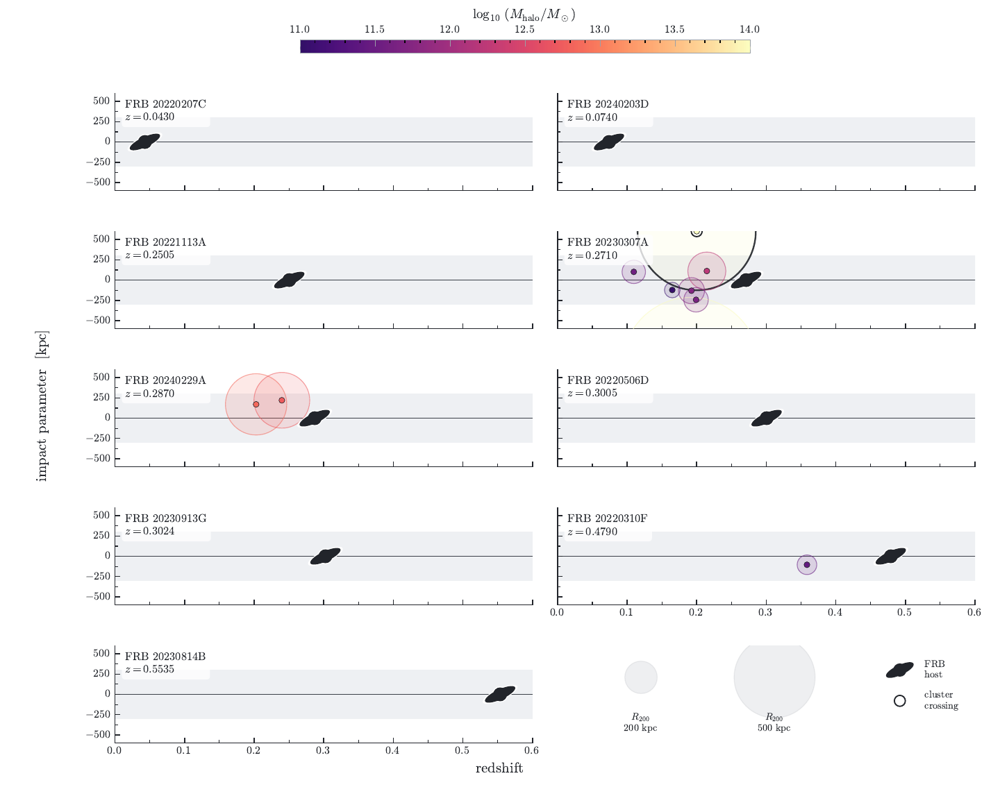

fig3-halo-grid: Figure 3: foreground halo sightlines
Status: pending

- Reproduction gate
- Verified
- Manuscript section
- Foreground galaxies / sightline halo grid
- Claim
- Figure 3 with corrected TNS identifiers and the budget-contributor diamond overlay removed per owner review 2026-07-26 (rendered panels contain only budget-contributing systems)
- Owner review question
- Approve this revision for the manuscript: corrected identifiers, no diamond overlay, cluster-crossing ring retained?
- Manuscript target
figures/sightline_halo_grid.pdf- Candidate SHA-256
3dece7e3f81f652aedd58b1cf53cb5fb1b86c3dc590238b0c72124c937b9bccb- Generator
pipeline/galaxies/v2_0/sightline_halo_grid.py --halo-csv pipeline/galaxies/foreground/data/sightline_halo_grid.csv- Required provenance
- expanded-catalog build manifest and SHA-256; versioned Figure 3 input and SHA-256; Verdi host-redshift source extract and SHA-256; Law host-redshift source extract and SHA-256; candidate-redshift ledger and replay receipt SHA-256; canonical selected source rows and full query responses SHA-256; manuscript-owner visual approval
- Frozen evidence
- expanded-catalog-build, figure3-input, verdi-host-redshifts, law-host-redshifts, candidate-redshift-ledger, candidate-redshift-replay, candidate-redshift-payloads
- DM record
- None
- Reviewer notes
- Supersedes batch 2026-07-26-fig3-name-repair (owner: needs_revision, drop diamonds). Built at dsa110-FLITS main 99e60c3a (PR #235, plotting-only change); registry snapshot unchanged (96bfd323); deterministic render (SOURCE_DATE_EPOCH=1784505600), reproduced identically from a clean worktree.